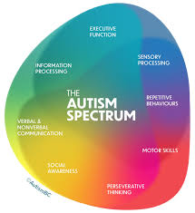

ASD(Autism Spectrom Disorder)
Autism spectrum disorder (ASD) is a developmental condition that affects a person’s ability to socialize and communicate with others. People with ASD can also present with restricted and/or repetitive patterns of behavior, interests or activities. The term “spectrum” refers to the degree in which the symptoms, behaviors and severity vary within and between individuals. Some people are mildly impaired by their symptoms, while others are severely disabled.
Symptoms
Symptoms of autism can include impairments to social interaction & communication, and restricted and repetitive patterns of behavior. More specific symptoms are outlined below: Delay in language development, such as not responding to their own name or speaking only in single words, if at all. Repetitive and routine behaviors, such as walking in a specific pattern or insisting on eating the same meal every day. Difficulty making eye contact, such as focusing on a person’s mouth when that person is speaking instead of their eyes, as is usual in most young children. Sensory dysregulation forms a strong component of ASD. This often presents as hyper (overly-sensitive) or hyposensitivity (less sensitive) to certain sensory stimuli. Examples include experiencing pain or pleasure from certain sounds, like a ringing telephone or not reacting to intense cold or pain, certain sights, sounds, smells, textures and tastes. The physical and emotional response in these cases can be very overwhelming and result in sensory overload, often leading to meltdowns. Difficulty interpreting subtle gestures & facial expressions, such as misreading or not noticing subtle facial cues, like a smile, wink or grimace, that could help understand the nuances of social communication. Problems in expressing emotions, such as facial expressions, movements, tone of voice and gestures that are often vague or do not match what is said or felt. Fixation on parts of objects, often to the detriment of understanding the “whole” such as focusing on a rotating wheel instead of playing with peers. Absence of pretend play, such as taking a long time to line up toys in a certain way, rather than playing with them. A lack of social understanding that makes interaction with peers challenging Self-injurious behavior. Individuals with ASD will often appear to hurt themselves in response to certain activities or environments. Sleep problems, such as falling asleep or staying asleep.